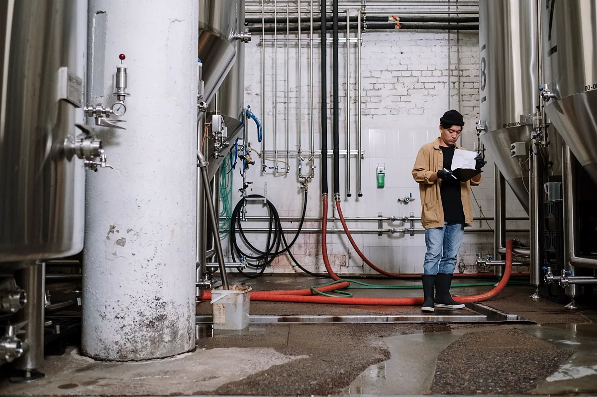
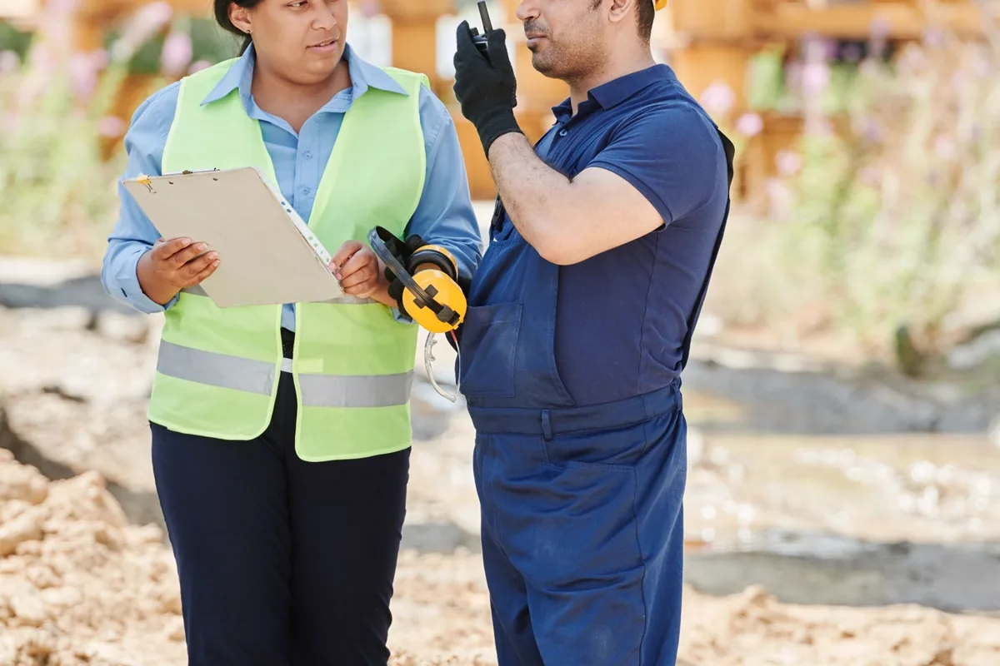

O que é SPIE e o que ele muda na prática
Este artigo trata da decisão de montar (ou não) um SPIE: o que a certificação exige, o que ela devolve e em que tipo de planta a conta fecha. Os prazos de inspeção em si — a tabela por categoria, a regra das caldeiras e a inspeção extraordinária — estão em periodicidade de inspeção NR-13 por categoria, e não são repetidos aqui.
SPIE é a sigla de Serviço Próprio de Inspeção de Equipamentos. É uma estrutura interna do estabelecimento, prevista na NR-13, que assume o planejamento, a execução e o controle das inspeções de segurança de caldeiras, vasos de pressão e demais equipamentos do escopo da norma. O que diferencia um SPIE de "ter um setor de inspeção" é a certificação: o serviço só é reconhecido como SPIE quando um organismo de certificação acreditado pelo Inmetro audita a estrutura e emite o certificado.
Com o certificado válido, a planta ganha o direito de operar com intervalos de inspeção estendidos em relação aos prazos gerais da NR-13, dentro dos limites que a própria norma define para estabelecimentos com SPIE. Sem o certificado — ou com ele vencido — valem os prazos gerais, independentemente de quão boa seja a equipe interna.
SPIE não é um software, não é um contrato e não é um PH contratado. É uma organização certificada. Um sistema de gestão ajuda a sustentar a certificação, mas não a substitui, e contratar uma empresa de inspeção, por melhor que seja, não transfere o direito aos prazos estendidos para a sua planta.
O que a certificação do SPIE exige
Os requisitos detalhados estão na NR-13 e no regulamento de avaliação da conformidade aplicado pelo organismo certificador. Na prática, a auditoria olha cinco blocos, e todos precisam existir antes do primeiro pedido de certificação.
Organismo de certificação acreditado pelo Inmetro
A planta escolhe e contrata um organismo acreditado, que faz a auditoria inicial, concede o certificado e passa a acompanhar o serviço. É um contrato de longo prazo: o custo não termina no certificado, porque a manutenção dele depende de novas auditorias.
Estrutura própria de inspeção e Profissional Habilitado
O SPIE precisa de gente própria, com funções definidas e qualificação comprovada: coordenação técnica por Profissional Habilitado, inspetores de equipamentos qualificados e acesso a ensaios não destrutivos executados por profissionais certificados. Serviços especializados, como parte dos ensaios não destrutivos, podem ser contratados, mas o planejamento, a avaliação dos resultados e a responsabilidade técnica permanecem com o serviço próprio. A estrutura também precisa de independência: quem decide sobre a liberação do equipamento não pode estar subordinado à pressão de produção sem instância técnica que o proteja.
Procedimentos escritos
Tudo que o SPIE faz precisa estar descrito: como se elabora o plano de inspeção de cada equipamento, como se define o intervalo, como se executa cada exame, como se trata uma não conformidade, como se qualifica e requalifica um inspetor, como se controla instrumento de medição. Procedimento que existe só na cabeça do inspetor mais antigo não passa em auditoria.
Rastreabilidade documental
É aqui que a maioria dos SPIEs sofre. Cada equipamento precisa ter prontuário, histórico de inspeções, medições de espessura comparáveis ao longo do tempo, taxa de corrosão e vida remanescente calculadas, recomendações abertas e fechadas, certificados de calibração de válvula de segurança e o registro de segurança atualizado. O auditor escolhe um equipamento e pede para ver a cadeia inteira: da última inspeção até a justificativa do intervalo adotado.
Auditorias de manutenção da certificação
Depois de certificado, o SPIE é auditado periodicamente pelo organismo. Não conformidades precisam de ação corretiva registrada e verificada. Uma auditoria mal resolvida pode levar à suspensão ou ao cancelamento do certificado — e, com ele, do direito aos prazos estendidos.

O que o SPIE devolve: prazo, parada e controle
O ganho mais visível é o intervalo maior entre inspeções de vasos de pressão e caldeiras. Os limites exatos para estabelecimentos com SPIE estão na NR-13 e resumidos em periodicidade de inspeção por categoria. Mas o prazo, isolado, não explica o valor. O que ele destrava é:
- Menos paradas para inspeção interna. Em caldeira e em vaso que só pode ser inspecionado internamente com a unidade parada, cada intervalo estendido é uma parada a menos no calendário de produção.
- Alinhamento das inspeções com as paradas programadas. Com mais folga de prazo, a planta consegue concentrar inspeções nas paradas gerais em vez de parar unidades fora de hora só para cumprir vencimento.
- Decisão técnica dentro de casa. O plano de inspeção passa a refletir o mecanismo de dano real de cada equipamento, e não apenas o calendário máximo da norma.
- Conhecimento acumulado. A equipe própria conhece o histórico de cada ativo, o que tende a melhorar a qualidade da avaliação de integridade ao longo dos anos.
Vale lembrar que prazo estendido é teto, não direito automático para cada equipamento. Se a taxa de corrosão ou a condição encontrada justificar, o Profissional Habilitado do SPIE deve reduzir o intervalo — e o auditor vai conferir se isso foi feito.
O que o SPIE custa: estrutura fixa que não depende do número de equipamentos
Não há preço de tabela para SPIE, e qualquer valor genérico seria chute. O que dá para afirmar é a natureza do custo: ele é majoritariamente fixo. Os componentes típicos são:
- equipe própria de inspeção e coordenação por Profissional Habilitado, com salários, encargos, treinamento e requalificação;
- elaboração e revisão contínua de procedimentos;
- instrumentos de medição próprios e o controle de calibração deles;
- sistema de gestão documental capaz de resistir a auditoria;
- contrato com o organismo certificador, auditoria inicial e auditorias de manutenção;
- tempo da gestão para tratar não conformidades e manter a estrutura viva.
Esse custo existe com dez ou com trezentos equipamentos. É por isso que a conta do SPIE é, antes de tudo, uma conta de escala: o ganho cresce com o parque e com o valor de cada parada evitada; o custo cresce muito menos. Para ter uma referência do lado terceirizado, veja quanto custa uma inspeção NR-13 e multiplique pelo parque e pela frequência.

SPIE ou terceirizar a inspeção: comparação lado a lado
A alternativa ao SPIE não é "não inspecionar": é contratar a inspeção NR-13 de uma empresa com Profissional Habilitado e seguir os prazos gerais da norma. As duas opções atendem à NR-13. A diferença está em custo, prazo e em quem carrega a estrutura.
Role para o lado para ver a tabela inteira
| Critério | SPIE certificado | Inspeção terceirizada |
|---|---|---|
| Intervalo entre inspeções | Estendido, nos limites da NR-13 para SPIE | Prazos gerais da NR-13 |
| Natureza do custo | Fixo e contínuo | Variável, por inspeção |
| Certificação e auditorias | Obrigatórias e recorrentes | Não se aplicam |
| Responsabilidade técnica | PH do próprio SPIE | PH da contratada, com ART |
| Controle documental | Da planta, auditado | Da planta, com relatórios da contratada |
| Flexibilidade de calendário | Alta, com folga de prazo | Menor, amarrada aos prazos gerais |
| Risco principal | Perder a certificação e ver o parque vencer de uma vez | Perder vencimento por falta de controle |
Um ponto que costuma passar despercebido: terceirizar a inspeção não terceiriza o controle. Mesmo sem SPIE, é a planta que precisa saber o que vence quando, guardar os relatórios, cobrar as recomendações e manter o prontuário. Uma boa empresa contratada ajuda — com relatórios padronizados e, idealmente, com um portal do cliente para baixar os documentos —, mas a obrigação continua sendo do empregador.
Quando o SPIE compensa: quatro critérios para decidir
Não existe número mágico de equipamentos a partir do qual o SPIE passa a valer. A decisão sai do cruzamento de quatro fatores:
Porte e número de equipamentos
Quanto maior o parque de caldeiras e vasos, mais inspeções o SPIE deixa de fazer no mesmo período e mais diluído fica o custo fixo. Parques com poucas unidades raramente justificam a estrutura; plantas de processo com dezenas ou centenas de equipamentos são o público natural do SPIE.
Criticidade e categoria
Equipamentos de categoria mais alta têm prazos gerais mais curtos, portanto é neles que a extensão pesa mais. Uma planta cujo parque é quase todo de vasos de baixa categoria ganha menos com o SPIE do que uma planta com muitos equipamentos críticos.
Custo de cada parada
Este costuma ser o fator decisivo. Em processo contínuo — química, papel e celulose, alimentos, mineração, siderurgia —, parar uma caldeira ou um vaso fora da parada geral pode custar mais que a própria inspeção. Se as inspeções internas obrigam paradas caras, o SPIE tende a se pagar. Se o equipamento pode ser parado no fim de semana sem impacto, o argumento enfraquece.
Maturidade de gestão
SPIE exige disciplina contínua. Uma planta que hoje controla vencimentos em planilha, sem histórico de espessura consolidado e com recomendações esquecidas em PDF, não está pronta para certificar — e o esforço de arrumar essa base precisa entrar na conta.
Um roteiro prático antes de decidir: levante o parque com categoria e data de vencimento de cada equipamento; estime quantas inspeções e quantas paradas o SPIE evitaria em um ciclo completo; compare com o custo fixo da estrutura; e avalie com honestidade se a base documental aguenta uma auditoria hoje.
SPIE vive de rastreabilidade documental
Na auditoria do SPIE, o que se avalia não é a competência do inspetor em campo, que o auditor não acompanha: é o registro. Plano de inspeção justificado, medições comparáveis, cálculo de vida remanescente, recomendação aberta com prazo e evidência de fechamento, calibração válida na data do exame. Se uma peça dessa cadeia some, o intervalo estendido fica sem sustentação.
É exatamente o ponto em que planilha e pastas de rede falham. O problema não é a planilha em si, mas o que acontece com ela depois de alguns anos e algumas trocas de responsável — o que está descrito em por que a planilha de inspeção NR-13 para de funcionar. Com dezenas de equipamentos, cada um com exame externo, interno, válvula e manômetro em datas diferentes, a planilha vira a principal fonte de não conformidade.
O Sistema NR13 não é SPIE e não dá direito a prazo estendido. O que ele faz é manter a base que o SPIE — ou qualquer planta que leve a NR-13 a sério — precisa apresentar: prontuário por equipamento, histórico de inspeções e espessuras, controle de calibração, registro de segurança gerado a partir dos relatórios e alerta de vencimento. Se você ainda está escolhendo ferramenta, veja como escolher software de gestão NR-13.
Perguntas frequentes sobre SPIE
O que é SPIE na NR-13?
SPIE é o Serviço Próprio de Inspeção de Equipamentos: uma estrutura interna do estabelecimento, com Profissional Habilitado, inspetores qualificados, procedimentos escritos e controle documental, certificada por organismo acreditado pelo Inmetro. Com a certificação válida, o estabelecimento pode operar caldeiras e vasos de pressão com intervalos de inspeção maiores que os da regra geral da NR-13.
Quem certifica o SPIE?
A certificação é feita por organismo de certificação acreditado pelo Inmetro, que avalia a estrutura, os procedimentos e os registros do serviço próprio antes de conceder o certificado e depois o mantém por meio de auditorias periódicas. Sem certificado válido, valem os prazos gerais da norma.
Software de gestão de inspeção substitui o SPIE?
Não. Software não constitui SPIE e não dá direito a prazo estendido. O que o software faz é sustentar a rastreabilidade documental que o organismo certificador audita: histórico por equipamento, relatórios, medições de espessura, calibrações e registro de segurança sempre recuperáveis.
Uma empresa pequena consegue ter SPIE?
Consegue, se montar a estrutura exigida, mas raramente compensa. O custo do SPIE é fixo — pessoal, procedimentos, sistema documental e auditorias — e o ganho cresce com o número de equipamentos e com o custo de cada parada. Em parques pequenos, inspeção terceirizada bem planejada costuma sair mais barata.
O que acontece se o SPIE perder a certificação?
O estabelecimento deixa de ter direito aos prazos estendidos e passa a seguir os prazos gerais da NR-13. Equipamentos cuja última inspeção foi feita há mais tempo do que o prazo geral permite podem ficar vencidos de imediato, por isso o plano de inspeção precisa prever essa contingência.
Precisa disso resolvido por engenharia habilitada?
A Axial Engenharia executa inspeção NR-13 com Profissional Habilitado e ART registrada, e ajuda plantas a organizar a base documental — prontuário, histórico e plano de inspeção — antes de qualquer decisão sobre SPIE. Atendemos presencialmente Vitória, Vila Velha, Serra, Cariacica, Viana, Guarapari e Fundão, com deslocamento programado para Anchieta, Aracruz e Linhares. Mande a lista de equipamentos pelo WhatsApp e o escopo volta no mesmo dia útil.